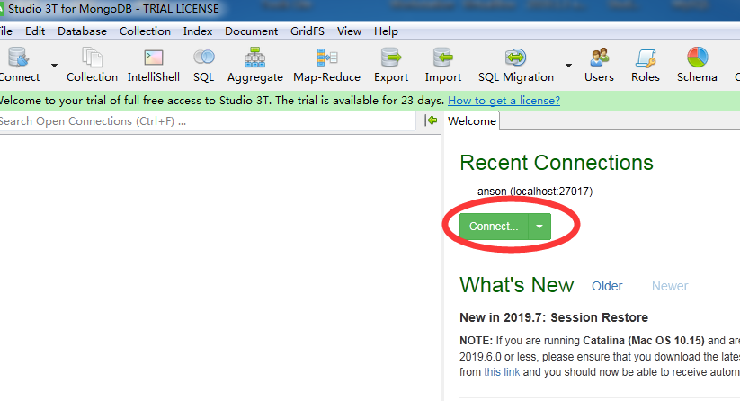
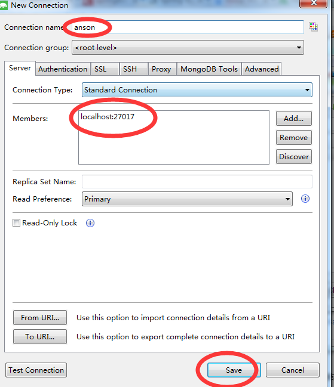
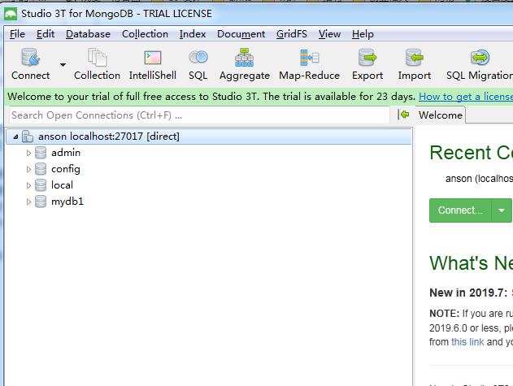

MongoDB是一个高性能、开源的文档型数据库，是当前nosql数据库中最热门的一种，在企业中广泛应用；虽然前段时间更改了开源协议导致被很多企业舍弃，但主要是对云服务商影响较大，对我们来说其实没什么影响；下面介绍简单集成，高级用法以后详聊
1、在官网下载Windows压缩包，解压
2、创建数据库存放地址，如：C:\data\db
3、在MongoDB的bin目录下创建bat文件，编辑写入：mongod --dbpath C:\data\db，保存，
然后，点击bat文件就启动了MongoDB了，默认端口是27017
--------------------------------------
4、GUI工具连接MongoDB，这类工具有不少，我们用studio 3T,下载安装后，点击连接



这样MongoDB和GUI工具都启动完毕
<!-- 6、集成mongodb -->
<dependency>
<groupId>org.springframework.boot</groupId>
<artifactId>spring-boot-starter-data-mongodb</artifactId>
</dependency>###################mongodb ################
spring.data.mongodb.host=127.0.0.1
spring.data.mongodb.port=27017
spring.data.mongodb.database=mydb1 @Autowired
private MongoTemplate mongoTemplate;
List<User> users = userservice.getAll();
mongoTemplate.insertAll(users); //插入MongoDB
好，集成MongoDB就这么简单，我们这个是基础篇，实际项目中更高级的用法我们以后在实战篇和提升篇再详细聊；